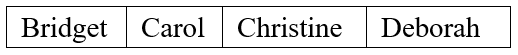

Learning Goals
At the end of this Tutorial, you will be able to:
- Create a function declaration.
- Create a function expression.
- Recognise that function declarations are hoisted but function expressions are not.
- Recognise that function expressions may be unnamed or anonymous.
- Use arrow functions that contain one or multiple statements.
Array iteration methods
A variable, as you have learnt, can store a value. Think of a variable as a box, in which you can place a single value. If the variable is mutable (created with let or var keywords), you can change the value in the box at any stage.
A variable can be created (declared), and a value assigned to it (initialised), in a single statement as shown below.
let userName = “Bridget”;
You can think of this variable as a single-compartment box that contains just one value.

But suppose you want to store several values in a box? You need a different kind of box: an array. You can declare an array and assign several values to it as follows.
let userNames = new Array ("Bridget","Carol","Christine","Deborah");
The individual array elements are separated by commas. You can also include single blank spaces after the commas as shown below.
let userNames = new Array ("Bridget", "Carol", "Christine", "Deborah");
This array or multi-compartment box has four values.
Each array element has an identifying number known as an index. Index values always begin at zero. An array with 4 elements, for example, has the following index values: [0], [1], [2] and [3].

You must follow the same rules when naming arrays as you do when naming variables:
- Do not use the same name for two different arrays within the same web page.
- Do not insert spaces within array names.
- To make array names easier to read, you can combine upper and lowercase letters.
- Be aware that array names are case-sensitive: myArray is not the same as myarray.
Assigning values to the elements of an array is known as populating the array.
Array
A mutable variable that can hold multiple values. Array names follow the same rules as variable names. Each element in an array is identified by an index number, beginning with zero.
The benefit of using arrays is that you can manipulate a large range of values with just a single name and an index number. For example, instead of assigning the twelve months of the year to twelve different variables, you could assign them to a single array.
Exercise 9.1 Creating an array: single line method
In this exercise, you will declare and populate an array using a series of comma-separated values on a single line. This is just one of the two methods of populating an array.
- Open the following file in VS Code and your web browser: 📄 exercise-9-1.html
- In the empty <script> tag pair, declare a variable named 'authors', create an array with this name, and populate the array with six values as shown below.
let authors; authors = new Array("Goddard","Grisham","Christie","Bryson","Heller","Jerome"); - Save the exercise-9-1.html web page.
A second method of populating an array is to write, on a series of different lines, each element's value and its associated index number. For example.
let userNames = new Array; userNames[0] = "Bridget"; userNames[1] = "Carol"; userNames[2] = "Christine"; userNames[3] = "Deborah";
The two approaches produce the same result.
- Single line method: For two or more arrays, one positioned beneath the other, the single-line method makes it easier to compare the different sets of array elements. An example is shown below.
let fNames = new Array("John","Kylie","Elton","Dianna"); let sNames = new Array("Lennon","Minogue","John","Ross"); - Multi-line method: For a single array with a large number of elements, the multi-line method makes it easier to read which element is located at which index value.
Exercise 9.2 Creating an array: multi-line method
In this exercise, you declare and populate an array using the one-element, one-line method.
- Open the following file in VS Code and your web browser: 📄 exercise-9-2.html
- In the empty <script> tag pair, declare a variable named 'authors', create an array with this name, and populate the array with six values as shown below.
let authors; authors = new Array; authors[0] = "Goddard"; authors[1] = "Grisham"; authors[2] = "Christie"; authors[3] = "Bryson"; authors[4] = "Heller"; authors[5] = "Jerome";
- Save the exercise-9-2.html web page.
Reading values from an array
Now you know how to populate an array. But how do you read what’s stored in an array? There are two situations when you want to access or ‘get at’ array values:
- When you want to write the values to the browser window, perhaps with a document.write() statement.
The following example writes the 34th index value from the array named ‘email_addr’ to the browser window.
document.write(“Email Address: "+email_addr[34]+"<br>");
- To copy an element's value to variable, use an assignment statement such as the one shown below.
let customer21_id = customer_ids[21];
In the above example, the value of the 21st element in the array named 'customer_ids' is copied to the variable named 'customer_21'. The array remains unchanged. Copying values from one array another to another is easy. Just use an assignment statement similar to the one below.new_films[46] = old_films[187];
In this example, the value of the 187th element in the array named 'old_films' is copied to the 46th element of the array named 'new_films'.
Reading array values with loops
Suppose your script contains an array named ‘fruit’ with six elements. You could write the values of the array’s six elements to the browser window with six separate document.write() statements as shown below.
document.write("Array Element 0: "+fruit[0]+"<br>");
document.write("Array Element 1: "+fruit[1]+"<br>");
document.write("Array Element 2: "+fruit[2]+"<br>");
document.write("Array Element 3: "+fruit[3]+"<br>");
document.write("Array Element 4: "+fruit[4]+"<br>");
document.write("Array Element 5: "+fruit[5]+"<br>");
That's a lot of typing.
There is an easier way: use a for loop containing a single document.write() statement as shown below.
for (i = 0; i <= 5; i++) {
document.write("Array Element "+i+": "+fruit[i]+"<br>");
}
As you can see, there are six elements in the array. However, the initial value of the counter variable is set to 0 and the upper value is set to 5.
This is because the array's index numbering runs from [0] to [5] and not from [1] to [6].
The array length property
To use a for loop to access all the values from an array, follow this simple rule:
The number of loop iterations must be the same as the number of elements in the array.
That way a document.write() statement is performed for each individual array element.
But the number of array elements may change during the script, so how can you set the upper value for the counter variable?
The solution is to use the length property of the array. This is the index number of the next empty element after highest occupied element in the array.
The following statement assigns the length of the array named ‘towns’ to a variable called 'myVar'.
myVar = towns.length;
You can use an array length property as the upper limit of a for loop as follows.
for (i=0; i < fruit.length; i++) {
document.write(“Array element "+i+:"" fruit[i];
}
Notice that the comparison operator for the upper value of the counter variable is 'less than' (<) and not 'less than or equal to' (<=).
Why?
Because the array length is always one greater than the index number of the highest array element.
For example, When an array has six elements, its index numbers run from [0] to [5], and its length property contains the value of 6.
Exercise 9.3 Reading array values with a for Loop
In this exercise, you will use a for loop to write the elements of an array to a HTML table in a web browser window.
- Open the following file in VS Code and your web browser: 📄 exercise-9-3.html
- You can see the array that you created and populated with six values from Exercise 9.2.
- Beneath the final array population statement, add a single document.write() statement as shown below.
document.write(authors[0]");
- Save the HTML file and view it in your web browser. You should see the content of the first value in the array ("Goddard").

- Next, rplace your single document.write() statement with a for loop as follows.
for ( i = 0; i <= 5; i++ ) { document.write("<p>"+authors[i]+"<\/p>"); } - Save the HTML file and view it in your web browser. It should now look as shown below.

All done. You can close the exercise-9-3.html web page when finished.
Assigning, modifying and deleting array values
Up to now, you have populated array elements only at the time you created the array. But you can insert values into an array at any stage. The general syntax is as follows.
array_name[index_number] = element_value;
The following code assigns the number 34 to the 20th index position of the array named myArray.
myArray[20] = 34;
You don't need to populate array elements in consecutive order, as in [0], [1], [2], [3], [4] and so on.
Imagine that you have an array called 'userNames'. It contains 10 elements, indexed from [0] to [9]. The following three statements are all valid.
userNames[10] = "Murphy"; userNames[11] = "Jones"; userNames[20] = "Collins";
In other words, JavaScript allows you to have 'gaps' or unfilled elements in an array. An array with such non-contiguous values is said to be sparsely populated. JavaScript treats the value of an unfilled array element as undefined.
Modifying array values
You change the value of an array element in exactly the same way as you first assign a value to that element. If your 'userNames' array currently has values at index locations [8], [9] and [56], the following statements overwrite those values with the new ones.
userNames[8] = "Harper"; userNames[9] = "Wallace"; userNames[56] = "Johnson";
Deleting array values
You can remove the contents of an array element with the delete method.
delete userNames[67];
This does not actually delete the element from the array; it just sets its value as undefined. The length property of the array is unaffected.
Common array methods
The filter method
Use this method to query an array for values that meet certain conditions. The filter() method works as follows:
- It invokes a callback function once for each element in the original array,
- If an element does not meet the query conditions, it is skipped. Indexes with unassigned values or that have been deleted are ignored.
- Values that do meet the query conditions are copied to a new array. The original array is unchanged.
- If no elements meet the query conditions, an empty array will be returned.
Consider the example below.
let nums = [1,2,3,4,5,6,7,8,9,10];
let filteredNums = nums.filter( function (num) {
return num > 6;
});
We can replace this anonymous callback function with a shorter arrow function as follows.
let nums = [1,2,3,4,5,6,7,8,9,10];
let filteredNums = nums.filter( (num) => {
return num > 6;
});
In this example, the query function accepts only a single parameter, contain only one statement, and returns only one value. So we can remove the parenthesis (), the return keyword and the code block {}.
let nums = [1,2,3,4,5,6,7,8,9,10]; let filteredNums = nums.filter( num => num > 6 );
Here is another example of the filter() method in action.
const words = ['spray', 'limit', 'elite', 'exuberant', 'destruction', 'present']; const filteredWords = words.filter(word => word.length > 6);
The following example returns all prime numbers in the array.
orEach() is an iteration method, and it is mainly used for the serial execution of functionality against a list of elements. The forEach() method executes a function once for each item in the array. The method is called on the array object that you wish to manipulate, and the function to call is provided as an argument.
he map(), filter(), and reduce() methods are designed to produce a return value, whether that value is a single object or an array.
In contrast, the forEach() method returns undefined. This can cause negative effects in some cases, such as when trying to chain multiple method calls together. As such, the forEach() method is generally used to perform serial execution of a function against a list of inputs.
About arrays
Functions are the building blocks of a programming language. You can think of a function as a ‘box’ or ‘sub-program’ that stores some code inside it.
In summary:
- A function is a block of code that performs a particular task.
- Whenever the program needs that task to be performed, it invokes (‘calls’ or ‘fires’) the function and runs the code inside it.

Dividing your program into functions brings one huge advantage: You need to write the code inside functions only once – but the program can invoke and run the functions as many times as is needed.
In short, functions are reusable and recyclable ♻️ code blocks.
Function names
In a JavaScript program, you can call a function by typing its name, followed by a pair of parenthesis () and a semi-colon ; For example:
displayGreeting();
There is no space between the function name and the opening parenthesis.
Here are some important points about naming functions in JavaScript:
- Names must be unique: Not every function need to have a name. (Functions can be anonymous.) But when a function has a name, that name must be unique. No two functions in the same scope may have the same name.
- No spaces or hyphens: Function names may not contain spaces or the hyphen character (-). The underline character (_) may be used and often is.
- Mixed character case: Developers typically combine upper and lowercase letters in a function name to make the name easier to read. For example, setFontSize() and calculateTax(). This convention is known as camelCase.
- Case sensitivity: Function names are case-sensitive. UpdateTotal() and updateTOTAL() are two different function names.
It's always a good idea to start a function name with an imperative verb (an action word such as ‘add’, ‘sum’, ‘calculate’, ‘update’, ‘display’ or ‘push’) that describes what the function does.
Functions and code blocks
In JavaScript, a code block is some code inside a pair of braces {}, also known as curly brackets. The code of a function is called the function body and is always written inside a pair of braces.
Typically, the code inside the code block is indented from the left by two spaces to make the function easier to read.

JavaScript functions may be created in different ways. Two of the most common are function declarations and function expressions. See below.
Function declarations
One way to create a function is to declare it with the relevant JavaScript keyword, much in the same way you would declare a variable.
- You declare variables with the var, const or let keywords.
- You declare a function with the function keyword.
See the sample function declaration below:
// Function declaration function displayGreeting() { console.log("Hello, world!"); }
Here is the syntax of a function declaration:
- Begins with the function keyword

- Then, after a space, comes the function name

- Then, without a space, is a pair of parentheses (). This may include one or more parameters separated by commas.

- Finally, inside a code block {}, you type the function's code.

You would call this function as shown below.

Function declarations and coding styles
Developers write function declarations in slightly different ways.
- The space after the pair of parenthesis () and before the opening brace { of the code block is optional.
- And some developers begin the code block {} on a new line. All three examples below will run correctly.

Function declarations are hoisted
A function declaration creates a function variable (with the same name as the function name) in the current scope.
Function variables are hoisted. As a result, you can call them before or after they are declared. Both of the code samples below will run without error.

Function expressions
A second way to create a function is with a function expression. See the example below:
// Function expression const greeting = (function displayGreeting() { console.log("Hello, world!"); });
A function expression is stored inside a regular JavaScript variable.
The syntax of a function expression as follows:
- Begin by writing a function declaration as shown below

- Enclose the function declaration inside a pair of parenthesis () .

- Add a semi-colon statement terminator ; at the end.
 A function expression ends with a semi-colon because it is a part of an executable statement.
A function expression ends with a semi-colon because it is a part of an executable statement.
- Begin the code with an equals = sign to make it the RHS of an assignment statement.

- On the LHS, write the variable keyword and the name of the variable that will store the function.
 Developers typically use the const variable type to store a function expression. This is to ensure the function is not accidentally changed or overwritten elsewhere in the program.
Developers typically use the const variable type to store a function expression. This is to ensure the function is not accidentally changed or overwritten elsewhere in the program.
Note the following:
- A function declaration begins with the function keyword.
- A function expression includes the function keyword, but begins with a variable declaration.
Strictly speaking, a function expression is not stored inside a JavaScript variable. Only the the value that the function expression evaluates to is stored in the variable.
Function expressions are not hoisted
You call a function expression in a similar way to how you call a function declaration. The difference is that you type the variable name rather than the function name. As with calling a function declaration, you follow this, without a space, with a pair of parenthesis (). See the example below.

Here are two important differences between function declarations and function expressions:
- Unlike a function declaration, a function expression does not create a function variable (which is hoisted).
- Instead, the function is stored inside a regular variable (which is not hoisted).
As a result, you can call a function expression only after you have created it – and never before.

In other words, you must treat a variable that stores a function expression in the same way as any other variable – first declare it, and only then use it.
Anonymous function expressions
Consider the sample function expression below.

You can see that the function contains two names:
- A variable name: In this example, greeting.
- A function name: In this example, displayGreeting.
But only one name is needed to call the function elsewhere in the program – the variable name.
So: do we need the function name at all?
Answer: 'No'.
You can convert a named function expression to an unnamed or anonymous function expression as follows:
- Remove the function name. But leave the parenthesis () after the keyword function.

- Remove the outer parenthesis () that encloses the RHS of the assignment statement.

That's it. You have now created an anonymous function.
Arrow function expressions
A so-called arrow function is a short-hand or quick way of typing an anonymous function expression.
Because arrow functions are always anonymous, you must assign them to a variable if you ant to call them from elsewhere in the program.
You can convert a regular anonymous function to an arrow function as follows:
- Remove the function keyword. But leave the parenthesis ().

- After the () and before the opening code block {, type an equals sign and a right arrow character =>

That's it. You have now created an arrow function.
For a function expression that contains only one statement, you can make the syntax of the arrow function even shorter. Here are the steps:
- Place all the function code on one line.

- Remove the code block braces {} and the final statement terminator ;.

This is possible only for single-statement functions. Arrow functions with multiple statements still need to include a code block {} that ends with a ; terminator.
Notice that, with arrow functions, the JavaScript syntax for declaring and initializing variables, and for creating function expressions, is very similar.
In both cases, the LHS of the assignment statement contains a variable type such as const and a variable name.
One difference is that, for arrow functions, the RHS of the assignment statement begins with the () => characters.
Another difference is that, unless the arrow function contains only one statement, the RHS will also contain code block braces {}.